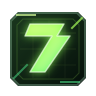

一键进入高性能状态
开游戏前点一下，把常用准备动作集中完成，不用每次到处找设置。

ZeroLag Gaming Performance Optimizer 立即体验ONE CLICK. GAME READY.
ZeroLag 把开游戏前最麻烦的准备动作收进一个按钮。少看教程，少翻设置，让电脑更快进入适合游戏的状态。
ONE CLICK BOOST
开游戏前点一下，把常用准备动作集中完成，不用每次到处找设置。
帮你减少会打扰游戏体验的后台占用，需要重启时也会直接告诉你。
游戏前减少无关占用，让电脑尽量把注意力放在当前游戏上。
处理器、独显、内存和游戏模式集中展示，开玩前心里更有底。
WHO NEEDS ZERO LAG
开局前先把电脑准备好，减少无关干扰，把注意力留给对局。
把容易漏掉的准备动作集中处理，尤其适合经常插电开黑的你。
不用理解复杂电脑术语，跟着清晰提示点就行。
LIVE DIAGNOSTICS
你不需要盯着一堆看不懂的信息，只需要知道电脑现在是不是已经适合开游戏。
SAFE EXPERIENCE
围绕开游戏前的真实场景设计，一次点击完成主要准备动作。
结束后帮助电脑回到更适合日常使用的状态，不用一直保持紧绷状态。
只展示“已加速、待启用、需要重启”等关键结果，不让你在技术细节里迷路。
PRO MEMBERSHIP
少一次折腾，多一次顺畅开局。一个月 30 元，把每次开游戏前的准备交给 ZeroLag。
FAQ
不同电脑和游戏的效果会不一样。ZeroLag 的价值，是帮你减少开局前的折腾和干扰，让电脑更快进入适合游戏的状态。
结束后，ZeroLag 会帮助电脑回到更适合日常使用的状态。你不用一直盯着设置，也不用担心状态没收回来。
它省下的是你每次开游戏前查教程、翻设置、反复确认状态的时间。对经常玩游戏的人来说，这是一套可以反复使用的开局准备工具。